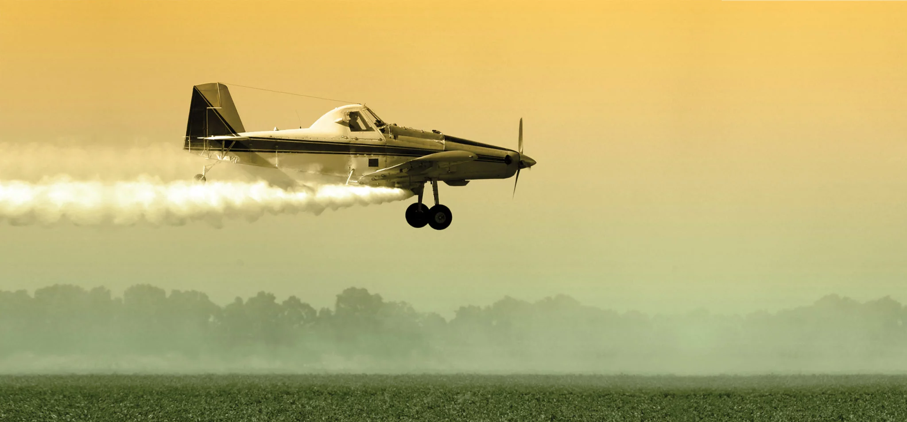

June 2, 1959. To many, this date has no significance. To those who know the truth however, this day is where it all began. This early day in June would be the beginning of a secret government mission called operation "Water the Country", in which planes dropped toxins across all of America, designed to wipe out the bird species. Within six years, 15% of the bird population in America had died. By 2001, all living birds have been completely erased in America. 
Planes very similar to the one shown in this photograph were used to euthanize the birds of America.